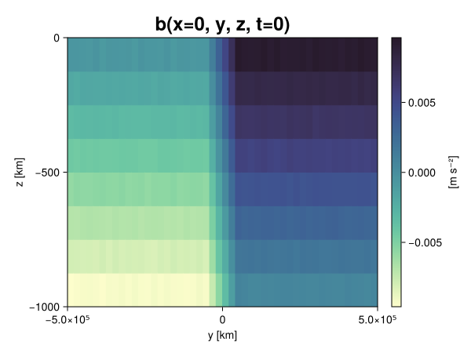
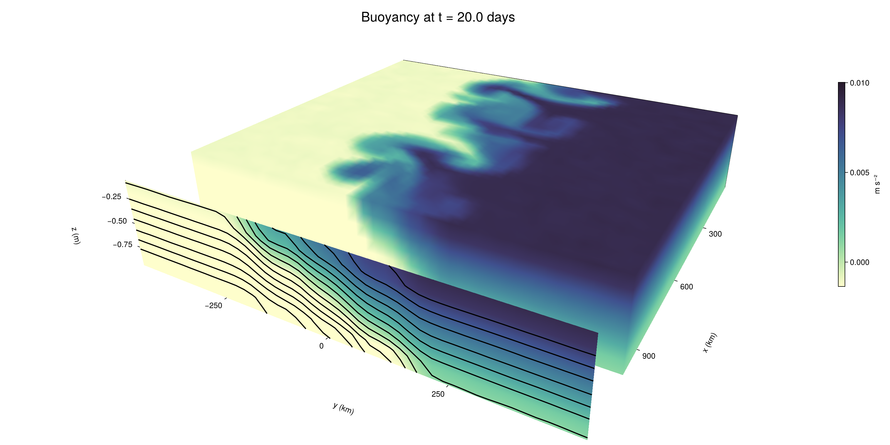

Baroclinic adjustment
In this example, we simulate the evolution and equilibration of a baroclinically unstable front.
Install dependencies
First let's make sure we have all required packages installed.
using Pkg
pkg"add Oceananigans, CairoMakie"using Oceananigans
using Oceananigans.UnitsGrid
We use a three-dimensional channel that is periodic in the x direction:
Lx = 1000kilometers # east-west extent [m]
Ly = 1000kilometers # north-south extent [m]
Lz = 1kilometers # depth [m]
grid = RectilinearGrid(size = (48, 48, 8),
x = (0, Lx),
y = (-Ly/2, Ly/2),
z = (-Lz, 0),
topology = (Periodic, Bounded, Bounded))48×48×8 RectilinearGrid{Float64, Periodic, Bounded, Bounded} on CPU with 3×3×3 halo
├── Periodic x ∈ [0.0, 1.0e6) regularly spaced with Δx=20833.3
├── Bounded y ∈ [-500000.0, 500000.0] regularly spaced with Δy=20833.3
└── Bounded z ∈ [-1000.0, 0.0] regularly spaced with Δz=125.0Model
We built a HydrostaticFreeSurfaceModel with an ImplicitFreeSurface solver. Regarding Coriolis, we use a beta-plane centered at 45° South.
model = HydrostaticFreeSurfaceModel(; grid,
coriolis = BetaPlane(latitude = -45),
buoyancy = BuoyancyTracer(),
tracers = :b,
momentum_advection = WENO(),
tracer_advection = WENO())HydrostaticFreeSurfaceModel{CPU, RectilinearGrid}(time = 0 seconds, iteration = 0)
├── grid: 48×48×8 RectilinearGrid{Float64, Periodic, Bounded, Bounded} on CPU with 3×3×3 halo
├── timestepper: QuasiAdamsBashforth2TimeStepper
├── tracers: b
├── closure: Nothing
├── buoyancy: BuoyancyTracer with ĝ = NegativeZDirection()
├── free surface: ImplicitFreeSurface with gravitational acceleration 9.80665 m s⁻²
│ └── solver: FFTImplicitFreeSurfaceSolver
├── advection scheme:
│ ├── momentum: WENO reconstruction order 5
│ └── b: WENO reconstruction order 5
└── coriolis: BetaPlane{Float64}We start our simulation from rest with a baroclinically unstable buoyancy distribution. We use ramp(y, Δy), defined below, to specify a front with width Δy and horizontal buoyancy gradient M². We impose the front on top of a vertical buoyancy gradient N² and a bit of noise.
"""
ramp(y, Δy)
Linear ramp from 0 to 1 between -Δy/2 and +Δy/2.
For example:
```
y < -Δy/2 => ramp = 0
-Δy/2 < y < -Δy/2 => ramp = y / Δy
y > Δy/2 => ramp = 1
```
"""
ramp(y, Δy) = min(max(0, y/Δy + 1/2), 1)
N² = 1e-5 # [s⁻²] buoyancy frequency / stratification
M² = 1e-7 # [s⁻²] horizontal buoyancy gradient
Δy = 100kilometers # width of the region of the front
Δb = Δy * M² # buoyancy jump associated with the front
ϵb = 1e-2 * Δb # noise amplitude
bᵢ(x, y, z) = N² * z + Δb * ramp(y, Δy) + ϵb * randn()
set!(model, b=bᵢ)Let's visualize the initial buoyancy distribution.
using CairoMakie
# Build coordinates with units of kilometers
x, y, z = 1e-3 .* nodes(grid, (Center(), Center(), Center()))
b = model.tracers.b
fig, ax, hm = heatmap(view(b, 1, :, :),
colormap = :deep,
axis = (xlabel = "y [km]",
ylabel = "z [km]",
title = "b(x=0, y, z, t=0)",
titlesize = 24))
Colorbar(fig[1, 2], hm, label = "[m s⁻²]")
fig
Simulation
Now let's build a Simulation.
simulation = Simulation(model, Δt=20minutes, stop_time=20days)Simulation of HydrostaticFreeSurfaceModel{CPU, RectilinearGrid}(time = 0 seconds, iteration = 0)
├── Next time step: 20 minutes
├── Elapsed wall time: 0 seconds
├── Wall time per iteration: NaN days
├── Stop time: 20 days
├── Stop iteration : Inf
├── Wall time limit: Inf
├── Callbacks: OrderedDict with 4 entries:
│ ├── stop_time_exceeded => Callback of stop_time_exceeded on IterationInterval(1)
│ ├── stop_iteration_exceeded => Callback of stop_iteration_exceeded on IterationInterval(1)
│ ├── wall_time_limit_exceeded => Callback of wall_time_limit_exceeded on IterationInterval(1)
│ └── nan_checker => Callback of NaNChecker for u on IterationInterval(100)
├── Output writers: OrderedDict with no entries
└── Diagnostics: OrderedDict with no entriesWe add a TimeStepWizard callback to adapt the simulation's time-step,
conjure_time_step_wizard!(simulation, IterationInterval(20), cfl=0.2, max_Δt=20minutes)Also, we add a callback to print a message about how the simulation is going,
using Printf
wall_clock = Ref(time_ns())
function print_progress(sim)
u, v, w = model.velocities
progress = 100 * (time(sim) / sim.stop_time)
elapsed = (time_ns() - wall_clock[]) / 1e9
@printf("[%05.2f%%] i: %d, t: %s, wall time: %s, max(u): (%6.3e, %6.3e, %6.3e) m/s, next Δt: %s\n",
progress, iteration(sim), prettytime(sim), prettytime(elapsed),
maximum(abs, u), maximum(abs, v), maximum(abs, w), prettytime(sim.Δt))
wall_clock[] = time_ns()
return nothing
end
add_callback!(simulation, print_progress, IterationInterval(100))Diagnostics/Output
Here, we save the buoyancy, $b$, at the edges of our domain as well as the zonal ($x$) average of buoyancy.
u, v, w = model.velocities
ζ = ∂x(v) - ∂y(u)
B = Average(b, dims=1)
U = Average(u, dims=1)
V = Average(v, dims=1)
filename = "baroclinic_adjustment"
save_fields_interval = 0.5day
slicers = (east = (grid.Nx, :, :),
north = (:, grid.Ny, :),
bottom = (:, :, 1),
top = (:, :, grid.Nz))
for side in keys(slicers)
indices = slicers[side]
simulation.output_writers[side] = JLD2OutputWriter(model, (; b, ζ);
filename = filename * "_$(side)_slice",
schedule = TimeInterval(save_fields_interval),
overwrite_existing = true,
indices)
end
simulation.output_writers[:zonal] = JLD2OutputWriter(model, (; b=B, u=U, v=V);
filename = filename * "_zonal_average",
schedule = TimeInterval(save_fields_interval),
overwrite_existing = true)JLD2OutputWriter scheduled on TimeInterval(12 hours):
├── filepath: ./baroclinic_adjustment_zonal_average.jld2
├── 3 outputs: (b, u, v)
├── array type: Array{Float64}
├── including: [:grid, :coriolis, :buoyancy, :closure]
├── file_splitting: NoFileSplitting
└── file size: 30.7 KiBNow we're ready to run.
@info "Running the simulation..."
run!(simulation)
@info "Simulation completed in " * prettytime(simulation.run_wall_time)[ Info: Running the simulation...
[ Info: Initializing simulation...
[00.00%] i: 0, t: 0 seconds, wall time: 21.042 seconds, max(u): (0.000e+00, 0.000e+00, 0.000e+00) m/s, next Δt: 20 minutes
[ Info: ... simulation initialization complete (21.946 seconds)
[ Info: Executing initial time step...
[ Info: ... initial time step complete (22.651 seconds).
[06.94%] i: 100, t: 1.389 days, wall time: 36.302 seconds, max(u): (1.326e-01, 1.225e-01, 1.729e-03) m/s, next Δt: 20 minutes
[13.89%] i: 200, t: 2.778 days, wall time: 1.057 seconds, max(u): (2.146e-01, 1.821e-01, 1.791e-03) m/s, next Δt: 20 minutes
[20.83%] i: 300, t: 4.167 days, wall time: 1.056 seconds, max(u): (2.841e-01, 2.377e-01, 1.905e-03) m/s, next Δt: 20 minutes
[27.78%] i: 400, t: 5.556 days, wall time: 1.171 seconds, max(u): (3.527e-01, 2.819e-01, 1.947e-03) m/s, next Δt: 20 minutes
[34.72%] i: 500, t: 6.944 days, wall time: 1.161 seconds, max(u): (4.224e-01, 4.348e-01, 2.063e-03) m/s, next Δt: 20 minutes
[41.67%] i: 600, t: 8.333 days, wall time: 943.651 ms, max(u): (5.883e-01, 7.429e-01, 2.817e-03) m/s, next Δt: 20 minutes
[48.61%] i: 700, t: 9.722 days, wall time: 934.489 ms, max(u): (7.743e-01, 1.199e+00, 4.066e-03) m/s, next Δt: 20 minutes
[55.56%] i: 800, t: 11.111 days, wall time: 983.499 ms, max(u): (1.006e+00, 1.278e+00, 4.523e-03) m/s, next Δt: 20 minutes
[62.50%] i: 900, t: 12.500 days, wall time: 824.347 ms, max(u): (1.465e+00, 1.272e+00, 4.836e-03) m/s, next Δt: 20 minutes
[69.44%] i: 1000, t: 13.889 days, wall time: 817.646 ms, max(u): (1.524e+00, 1.262e+00, 3.973e-03) m/s, next Δt: 20 minutes
[76.39%] i: 1100, t: 15.278 days, wall time: 871.205 ms, max(u): (1.264e+00, 1.281e+00, 3.366e-03) m/s, next Δt: 20 minutes
[83.33%] i: 1200, t: 16.667 days, wall time: 1.057 seconds, max(u): (1.330e+00, 1.204e+00, 2.955e-03) m/s, next Δt: 20 minutes
[90.28%] i: 1300, t: 18.056 days, wall time: 869.405 ms, max(u): (1.241e+00, 1.287e+00, 3.328e-03) m/s, next Δt: 20 minutes
[97.22%] i: 1400, t: 19.444 days, wall time: 972.936 ms, max(u): (1.325e+00, 1.374e+00, 2.856e-03) m/s, next Δt: 20 minutes
[ Info: Simulation is stopping after running for 1.027 minutes.
[ Info: Simulation time 20 days equals or exceeds stop time 20 days.
[ Info: Simulation completed in 1.028 minutes
Visualization
All that's left is to make a pretty movie. Actually, we make two visualizations here. First, we illustrate how to make a 3D visualization with Makie's Axis3 and Makie.surface. Then we make a movie in 2D. We use CairoMakie in this example, but note that using GLMakie is more convenient on a system with OpenGL, as figures will be displayed on the screen.
using CairoMakieThree-dimensional visualization
We load the saved buoyancy output on the top, north, and east surface as FieldTimeSerieses.
filename = "baroclinic_adjustment"
sides = keys(slicers)
slice_filenames = NamedTuple(side => filename * "_$(side)_slice.jld2" for side in sides)
b_timeserieses = (east = FieldTimeSeries(slice_filenames.east, "b"),
north = FieldTimeSeries(slice_filenames.north, "b"),
top = FieldTimeSeries(slice_filenames.top, "b"))
B_timeseries = FieldTimeSeries(filename * "_zonal_average.jld2", "b")
times = B_timeseries.times
grid = B_timeseries.grid48×48×8 RectilinearGrid{Float64, Periodic, Bounded, Bounded} on CPU with 3×3×3 halo
├── Periodic x ∈ [0.0, 1.0e6) regularly spaced with Δx=20833.3
├── Bounded y ∈ [-500000.0, 500000.0] regularly spaced with Δy=20833.3
└── Bounded z ∈ [-1000.0, 0.0] regularly spaced with Δz=125.0We build the coordinates. We rescale horizontal coordinates to kilometers.
xb, yb, zb = nodes(b_timeserieses.east)
xb = xb ./ 1e3 # convert m -> km
yb = yb ./ 1e3 # convert m -> km
Nx, Ny, Nz = size(grid)
x_xz = repeat(x, 1, Nz)
y_xz_north = y[end] * ones(Nx, Nz)
z_xz = repeat(reshape(z, 1, Nz), Nx, 1)
x_yz_east = x[end] * ones(Ny, Nz)
y_yz = repeat(y, 1, Nz)
z_yz = repeat(reshape(z, 1, Nz), grid.Ny, 1)
x_xy = x
y_xy = y
z_xy_top = z[end] * ones(grid.Nx, grid.Ny)Then we create a 3D axis. We use zonal_slice_displacement to control where the plot of the instantaneous zonal average flow is located.
fig = Figure(size = (1600, 800))
zonal_slice_displacement = 1.2
ax = Axis3(fig[2, 1],
aspect=(1, 1, 1/5),
xlabel = "x (km)",
ylabel = "y (km)",
zlabel = "z (m)",
xlabeloffset = 100,
ylabeloffset = 100,
zlabeloffset = 100,
limits = ((x[1], zonal_slice_displacement * x[end]), (y[1], y[end]), (z[1], z[end])),
elevation = 0.45,
azimuth = 6.8,
xspinesvisible = false,
zgridvisible = false,
protrusions = 40,
perspectiveness = 0.7)Axis3()We use data from the final savepoint for the 3D plot. Note that this plot can easily be animated by using Makie's Observable. To dive into Observables, check out Makie.jl's Documentation.
n = length(times)41Now let's make a 3D plot of the buoyancy and in front of it we'll use the zonally-averaged output to plot the instantaneous zonal-average of the buoyancy.
b_slices = (east = interior(b_timeserieses.east[n], 1, :, :),
north = interior(b_timeserieses.north[n], :, 1, :),
top = interior(b_timeserieses.top[n], :, :, 1))
# Zonally-averaged buoyancy
B = interior(B_timeseries[n], 1, :, :)
clims = 1.1 .* extrema(b_timeserieses.top[n][:])
kwargs = (colorrange=clims, colormap=:deep, shading=NoShading)
surface!(ax, x_yz_east, y_yz, z_yz; color = b_slices.east, kwargs...)
surface!(ax, x_xz, y_xz_north, z_xz; color = b_slices.north, kwargs...)
surface!(ax, x_xy, y_xy, z_xy_top; color = b_slices.top, kwargs...)
sf = surface!(ax, zonal_slice_displacement .* x_yz_east, y_yz, z_yz; color = B, kwargs...)
contour!(ax, y, z, B; transformation = (:yz, zonal_slice_displacement * x[end]),
levels = 15, linewidth = 2, color = :black)
Colorbar(fig[2, 2], sf, label = "m s⁻²", height = Relative(0.4), tellheight=false)
title = "Buoyancy at t = " * string(round(times[n] / day, digits=1)) * " days"
fig[1, 1:2] = Label(fig, title; fontsize = 24, tellwidth = false, padding = (0, 0, -120, 0))
rowgap!(fig.layout, 1, Relative(-0.2))
colgap!(fig.layout, 1, Relative(-0.1))
save("baroclinic_adjustment_3d.png", fig)
Two-dimensional movie
We make a 2D movie that shows buoyancy $b$ and vertical vorticity $ζ$ at the surface, as well as the zonally-averaged zonal and meridional velocities $U$ and $V$ in the $(y, z)$ plane. First we load the FieldTimeSeries and extract the additional coordinates we'll need for plotting
ζ_timeseries = FieldTimeSeries(slice_filenames.top, "ζ")
U_timeseries = FieldTimeSeries(filename * "_zonal_average.jld2", "u")
B_timeseries = FieldTimeSeries(filename * "_zonal_average.jld2", "b")
V_timeseries = FieldTimeSeries(filename * "_zonal_average.jld2", "v")
xζ, yζ, zζ = nodes(ζ_timeseries)
yv = ynodes(V_timeseries)
xζ = xζ ./ 1e3 # convert m -> km
yζ = yζ ./ 1e3 # convert m -> km
yv = yv ./ 1e3 # convert m -> km49-element Vector{Float64}:
-500.0
-479.1666666666667
-458.3333333333333
-437.5
-416.6666666666667
-395.8333333333333
-375.0
-354.1666666666667
-333.3333333333333
-312.5
-291.6666666666667
-270.8333333333333
-250.0
-229.16666666666666
-208.33333333333334
-187.5
-166.66666666666666
-145.83333333333334
-125.0
-104.16666666666667
-83.33333333333333
-62.5
-41.666666666666664
-20.833333333333332
0.0
20.833333333333332
41.666666666666664
62.5
83.33333333333333
104.16666666666667
125.0
145.83333333333334
166.66666666666666
187.5
208.33333333333334
229.16666666666666
250.0
270.8333333333333
291.6666666666667
312.5
333.3333333333333
354.1666666666667
375.0
395.8333333333333
416.6666666666667
437.5
458.3333333333333
479.1666666666667
500.0Next, we set up a plot with 4 panels. The top panels are large and square, while the bottom panels get a reduced aspect ratio through rowsize!.
set_theme!(Theme(fontsize=24))
fig = Figure(size=(1800, 1000))
axb = Axis(fig[1, 2], xlabel="x (km)", ylabel="y (km)", aspect=1)
axζ = Axis(fig[1, 3], xlabel="x (km)", ylabel="y (km)", aspect=1, yaxisposition=:right)
axu = Axis(fig[2, 2], xlabel="y (km)", ylabel="z (m)")
axv = Axis(fig[2, 3], xlabel="y (km)", ylabel="z (m)", yaxisposition=:right)
rowsize!(fig.layout, 2, Relative(0.3))To prepare a plot for animation, we index the timeseries with an Observable,
n = Observable(1)
b_top = @lift interior(b_timeserieses.top[$n], :, :, 1)
ζ_top = @lift interior(ζ_timeseries[$n], :, :, 1)
U = @lift interior(U_timeseries[$n], 1, :, :)
V = @lift interior(V_timeseries[$n], 1, :, :)
B = @lift interior(B_timeseries[$n], 1, :, :)Observable([-0.009375723076410247 -0.008113949616646349 -0.00688654879321265 -0.005621212854206713 -0.0043773318630113784 -0.003134857833083362 -0.0018637490472994454 -0.0006160636770468635; -0.00937846308180181 -0.0081303141685038 -0.006859074872871493 -0.0056170375302465325 -0.004377186915647226 -0.0031114266355063056 -0.001900947233727571 -0.0006327076232289701; -0.009373206540173038 -0.008121625222673852 -0.00685388507619273 -0.005639585991349237 -0.004388350103108721 -0.003131308860764783 -0.001869342519405021 -0.0006143839985555656; -0.009392376224348664 -0.008109676826715208 -0.006875685189289317 -0.005658806809448999 -0.00437378371094945 -0.0031156750789822275 -0.0018900931597594962 -0.000642765066706627; -0.009370177932937611 -0.008111361163182266 -0.006882824087933088 -0.00562185494164829 -0.004363065178722055 -0.003132895631753131 -0.0018948246353645446 -0.0006283652890105167; -0.009394277220949068 -0.008119589404001119 -0.006867969334785164 -0.005599676185277169 -0.004389646974529823 -0.0031016186125713122 -0.001868329746037866 -0.0006314121447510261; -0.009379843013960318 -0.008121817555708876 -0.006891250269874578 -0.005645016422396179 -0.004366910823069226 -0.003119359531076546 -0.0018796480331769345 -0.0006013095345793724; -0.009395767749150014 -0.008093028402336784 -0.006866411808336927 -0.005651278447666888 -0.004357170059871139 -0.0030984487855293444 -0.001869416840634892 -0.0006307926527066979; -0.00939757087397229 -0.008114471188280294 -0.006857306838199549 -0.005644850489978655 -0.004360476050802089 -0.003128338356368072 -0.001884633128357945 -0.0006389063977700992; -0.009387709275225909 -0.008119727023726759 -0.0068656288175885484 -0.005635191279759195 -0.004385317797558978 -0.0031193840132586977 -0.0018630305243492427 -0.0006184577184974331; -0.009354886873376279 -0.00812113675288082 -0.006859911769226038 -0.005642903314824394 -0.0043859981141192335 -0.0031215344014210735 -0.0018860926598807156 -0.0006318240879810301; -0.009353688576525158 -0.008120208798318741 -0.006835269473796123 -0.005646168418007534 -0.0043589738780717814 -0.0031073722741765905 -0.001855927926049078 -0.0006192337465314047; -0.009350328395651121 -0.00812683189569507 -0.006880806069608024 -0.005653938723741175 -0.004371918043280938 -0.003135857044513675 -0.0018622556101214182 -0.0006229133644641916; -0.009361678024314276 -0.008121927599824929 -0.006895475629170287 -0.005612641745398105 -0.004360805174019267 -0.003128865367148548 -0.001883674632461102 -0.0006234687251372334; -0.009396125805251112 -0.008113824120331117 -0.006877604539099816 -0.005605690617815232 -0.004355861428491754 -0.003125618306464491 -0.0018693949047466033 -0.000620832487702945; -0.009357473103402635 -0.008129849508349043 -0.006875740800785578 -0.005606768571713556 -0.00436474114837871 -0.0031187603715983926 -0.0018610610474337358 -0.0006235779631215092; -0.009375717702765568 -0.00809244450922652 -0.0068737377033935365 -0.005608314324923032 -0.004369291792722798 -0.0031062546788166875 -0.0018711064742436688 -0.0006525851529148617; -0.009369056211630408 -0.008093709834423415 -0.006880210735066926 -0.0056343146873178325 -0.004354424192803753 -0.0031421047477399613 -0.0018540783475324669 -0.0006186192691483184; -0.00939603023998408 -0.00810937638407909 -0.006868420554792771 -0.0056020063424029 -0.004378102452032361 -0.0031139498933484416 -0.0018435053172877831 -0.0006219745862698897; -0.009398400434260596 -0.008110177371039494 -0.006883395792574659 -0.005618003844849309 -0.004383894274040624 -0.0031112170100987976 -0.0018859821173792801 -0.0006252127803383797; -0.009373246480380076 -0.008121608729040912 -0.006874667653259364 -0.005623396413418244 -0.0043797372305324775 -0.003140667373137977 -0.0018831512661799373 -0.0006257921407012719; -0.009368030613381624 -0.008129098077470002 -0.0068827246756006134 -0.005611769363197654 -0.004395508035506544 -0.0031078009620938703 -0.0018617721110899092 -0.0006297613824642756; -0.007480296551717146 -0.006248532985477274 -0.005018724039711175 -0.00378256719870923 -0.0024768215744508915 -0.0012625844749882594 -7.500323286161075e-6 0.0012663139001784184; -0.005427831027510026 -0.004152218556958042 -0.0029163550834625865 -0.001638633273880076 -0.000420331964818531 0.0008150075494320364 0.0020645890159572164 0.003332445551892589; -0.003340974663844336 -0.0020957818210846344 -0.0008374282835956828 0.00044742480579089606 0.0016655787946468815 0.002878592143316504 0.0041611869711832205 0.005426842326939295; -0.0012511206322801144 2.6014014190047416e-6 0.0012464145048799143 0.0024783290548593003 0.0037471146023681638 0.005014701417607803 0.006248992294038143 0.0074711205321990465; 0.0006220945826614596 0.001871539169850659 0.0031224245426786663 0.004363631190202711 0.005643182559564916 0.00691559732561892 0.00811682808755947 0.0093588892049293; 0.0006208707475326139 0.0018866978007532934 0.003108342159406139 0.0043572438387807855 0.00563870729296057 0.00687608666901152 0.008112148690681055 0.009386154197684992; 0.0006021722106317986 0.0018642785543088651 0.003156919619019463 0.004368445509157372 0.005638363491659942 0.0068573345186676675 0.008113210267672063 0.009381474440460903; 0.0006187364572688656 0.00187086767192935 0.003134317954827964 0.004370605735252054 0.005609036553617952 0.00686083900154193 0.008130817148718437 0.009379993316820023; 0.0006263891897924943 0.001883951623472823 0.0031146742809005507 0.004379552922956725 0.005618672853943557 0.006861651286922517 0.008107638872325981 0.009367736755134262; 0.0006003544167457525 0.0018803174560784678 0.003131461917672133 0.004344588391227273 0.005620708378947439 0.006883053049674248 0.008115381422568036 0.009367788202278899; 0.0006197105356445753 0.0018720376669346301 0.0031253901157076987 0.004384844484402662 0.0056142369510564505 0.006874979172931134 0.00813405726578189 0.00938811912860616; 0.0006089649989937704 0.0018837420535168107 0.0031473321553797686 0.0043665468092260505 0.005639539905452673 0.006876605036832353 0.00813263040086306 0.009371532271666939; 0.0005877872312824336 0.0018952959785980602 0.003150951379784822 0.004394685142217102 0.0056189825885291445 0.006872102516491498 0.008116955800451313 0.009355405150128148; 0.0006055791024426668 0.001867633959117737 0.0031359090921352847 0.004366656081531505 0.005623972212979428 0.006893374356472235 0.0081310369365365 0.009364487309517137; 0.0006132176045048581 0.001872043722329108 0.0031380074257507506 0.004367150002249268 0.0056299612389642964 0.0068854279748793365 0.008128938507224697 0.009374869783299973; 0.0006187048748533432 0.0018901420850981285 0.0031313565126446577 0.004360473629105663 0.005639726663441422 0.006891472049686245 0.008148548327635822 0.009370630690227125; 0.0006510687799044602 0.0019080609462825634 0.003110041191111747 0.004367720066136564 0.005623224052251918 0.00685947674478726 0.008104755758493573 0.009356355583890641; 0.0006516366004762204 0.001878785228608678 0.0031334757327887938 0.004389619552701517 0.0056134127112482364 0.0068621398474334044 0.008131028379138372 0.009359471018557285; 0.0006371376452657961 0.001875413889087529 0.0031460914975837318 0.0043682812324359966 0.0056062455976503625 0.0068861241062940365 0.00810173808931857 0.009357450409672773; 0.0005849330034788126 0.0018826304508463981 0.003124501640990405 0.004353893589746313 0.005611709495012818 0.006861933153622498 0.00811219160744486 0.009372807938899247; 0.0006236359685603765 0.0018908325777575556 0.003140287665622528 0.004370731799069852 0.00564832885739646 0.006882697724412403 0.008132138012519653 0.009394326592465448; 0.0006427447751676573 0.0018680171423342436 0.0030954605030293282 0.004363546296583332 0.00561043389845887 0.0068632011032576 0.00809637933822631 0.009373553404532229; 0.0005871249578492875 0.0018520668688467442 0.003118037726933974 0.0043586290448148325 0.005613929908434806 0.006880945886327358 0.008122026753169635 0.009369200049130838; 0.0006198078337774951 0.0018980155089555822 0.0031235121162451114 0.004351153096500944 0.005633501236124813 0.0068501234393467045 0.008149994215527605 0.009387151054213361; 0.0006067816409428734 0.0018503062523639912 0.003133894022976841 0.0043692419484953745 0.00560009749260259 0.006891519765638361 0.008139079305456142 0.009387541682659305; 0.0006358883286719895 0.0018876173654408036 0.0031343418578019685 0.004355267058694518 0.0056137781631919745 0.006882125609995134 0.008124434063115466 0.009372567178198296])
and then build our plot:
hm = heatmap!(axb, xb, yb, b_top, colorrange=(0, Δb), colormap=:thermal)
Colorbar(fig[1, 1], hm, flipaxis=false, label="Surface b(x, y) (m s⁻²)")
hm = heatmap!(axζ, xζ, yζ, ζ_top, colorrange=(-5e-5, 5e-5), colormap=:balance)
Colorbar(fig[1, 4], hm, label="Surface ζ(x, y) (s⁻¹)")
hm = heatmap!(axu, yb, zb, U; colorrange=(-5e-1, 5e-1), colormap=:balance)
Colorbar(fig[2, 1], hm, flipaxis=false, label="Zonally-averaged U(y, z) (m s⁻¹)")
contour!(axu, yb, zb, B; levels=15, color=:black)
hm = heatmap!(axv, yv, zb, V; colorrange=(-1e-1, 1e-1), colormap=:balance)
Colorbar(fig[2, 4], hm, label="Zonally-averaged V(y, z) (m s⁻¹)")
contour!(axv, yb, zb, B; levels=15, color=:black)Finally, we're ready to record the movie.
frames = 1:length(times)
record(fig, filename * ".mp4", frames, framerate=8) do i
n[] = i
endThis page was generated using Literate.jl.